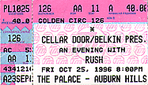
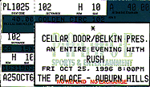

|
October 25, 1996 The Palace. Auburn Hills, MI
  Interview with Alex on 102.7 (1.2Mb) The interviewer is Ted Nugent. LOTS of thanks go out to Garth Banninga for mailing me the tape!!!
Listeners will be quick to lose interest in Rush By Tom Long, Detroit News Pop Music Critic Canadian rockers Rush made the transition from maybe-metal to commercial-progressive quite a while back, and it has certainly worked in terms of sales over the band's past two decades. Rush, who plays the Palace at Auburn Hills on Friday, is a consistent platinum player, and its latest CD, Test for Echo, is firmly ensconced near the top of the charts these days. Problem is, Rush's idea of progressive isn't terribly forward looking. Anything on Test for Echo could have been recorded in 1973 by the almost forgotten Uriah Heep. This is not progress, this is bad taste with staying power. Not that the three geezers who comprise Rush aren't fine musicians. Singer-bass player Geddy Lee has toned his pop-your-eyeballs-out screech down to an almost folky tenor, and guitarist Alex Lifeson lays an efficient mix of lines and chords over drummer Neil Peart's busy thumping. Polished players all. But the songs here strain to make statements about the modern condition while exhibiting the depth of a puddle. And much of the time the musical changes scream "This is impressive" when in fact they are fairly mundane. The album is perhaps epitomized by the absurd "Dog Years," wherein Lee cries out the chorus Dog Years - it's the season of the itch with operatic fervor over a storm of rousing instrumentation as if this is something powerfully affecting. Honest, it's not. Lee gets off some good lines, most notably in "Half the World" (Half the world hates what half the world does every day), but Rush spends so much time trying to be heavy it undercuts what few fine moments it can come up with. This music obviously works for 15-year-old boys hiding from homework with the headphones on. It has worked in that way for a long time now, and perhaps there's value in that (there's certainly money in it). But others encountering Rush will likely find themselves in a rush to turn the stereo off.
In Concert The Detroit Free Press October 25, 1996 Rush puts some surprises in its 3-hour stage shows
BY BRIAN MCCOLLUM So much for self-indulgence. Neil Peart has 22 years worth of Rush records he can listen to, but he won't do it. The highly heralded drummer for the stalwart Canadian rock trio says he wouldn't dream of kicking back in his living room and spinning such albums as 1974's "Fly By Night" or 1978's "Hemispheres." Too indulgent, he says -- and "just wrong." So when it came time to carve a lengthy set list for the band's new tour -- the first featuring three hours of music and no opening act -- Peart had to pull out old LP covers and scan song titles to refresh his memory. Some off-the-wall suggestions from Peart and his band mates, bassist Geddy Lee and guitarist Alex Lifeson, ultimately made it into the mix. "The three of us were sending faxes back and forth with potential lists," recalls Peart. "Some were intended to be ridiculous suggestions, but even some of those worked out. Somebody else would take it seriously and say, 'Well, wait a minute. What if we did this? It could really work.' " Skip this paragraph if you don't want to know what surprises may pop up tonight at the Palace of Auburn Hills, but shows on the tour's first week have featured such long-buried chestnuts as "Natural Science," "Red Sector A" and "2112" -- in its seven-part entirety. For fans of the virtuoso ensemble, news like that seems heaven-sent. Since taking Peart on board in 1974, the Toronto band has carefully emphasized its newest musical approach. With 16 studio albums -- including "Test for Echo" (Atlantic), which debuted at No. 5 on Billboard's albums chart early this month -- there's certainly a hefty body of work to choose from. Take away Aerosmith, whose membership fractured for several years in the early '80s, and Rush has the longest endurance record of any original rock lineup around. But fans hoping to hear something really odd -- say, "Losing It" from "Signals" or "Didacts and Narpets" from "Caress of Steel" -- may be out of luck. He won't name names, but suffice to say that plenty of the old material makes Peart squirm. "Do you want to see your kindergarten paintings hanging on the refrigerator?" he says with a laugh. "That's the unfortunate part of it -- so much of your growth and development takes place in public. That's tough, to know that things you did 23, 24 years ago are still out there in front of people. Of course it's embarrassing." With last week's tour kickoff in Albany, N.Y., the famously hard-working Rush just closed the biggest road break of its career. Since capping the "Counterparts" tour in mid-1994, band members have indulged in side projects (Peart's Buddy Rich tribute, Lifeson's solo disc), babies (Lee's new son) and even musical training (Peart has worked with a drum coach for two years). For Peart, roundly considered the top drummer in rock, taking time off wasn't exactly taking time off. Peart, 44, says two years off the road led to one of the most fertile musical periods he's ever enjoyed. "I spent the last two years in my basement basically playing drums for the spiders," he says. "And that did me more good musically than two years of touring -- or five years of touring -- would ever have done." Armed with renewed energy, the band went roaring into last winter's "Echo" sessions near Woodstock, N.Y. It had already run through the traditional Rush creative game plan: hunkering down at a house in the Canadian countryside, where Lee and Lifeson forged song structures while Peart toiled meticulously on the words that would fill them. "It's almost like a slowed-down session of an improvisational session of a three-piece group," Peart says. "We're responding to what each other is doing, trying to put forward our own ideas, and trying also to create something larger musically than any of those elements. Instead of happening spontaneously in the moment, it's happening over a slow period." The latest result -- a guitar-heavy album that rocks harder and more crisply than anything from Rush in the last 10 years -- should convince doubters that the longtime trio is anything but a bunch of old farts. But Peart stills foresees change for the band. Amid plans to record and release more Buddy Rich tribute material, Peart sees the grind of touring becoming a less efficient way to ease his musical itch. "In your building years there's nothing better you could do than go out and play every night on a stage and force yourself to that level. We would feel it, as a band, getting better and getting tighter as a unit, all of that," he says. "But of course once you've achieved that after 20 years, you have it." That doesn't mean he's complacent about playing in front of 20,000 demanding fans. When you're held up as the world's best drummer, and your band is expected to maintain on-a-dime performance standards, the pressure can get intense. "That's a tremendous challenge, to walk up those stairs every night, especially with 20-odd years behind you, and a certain expectation from the audience about how good the performance is supposed to be," Peart says. "You're no longer trying to prove anything to someone who doesn't know you. You're trying to live up to something. "It's the ultimate ordeal by fire."
Hitting the beats with Neil Peart
By BRIAN McCOLLUM So what kind of show are we gonna see?
Well, for the first time, we're gonna do an "Evening With" format, something we've always stayed away from, because of course we came up as an opening act and we hated to close that door. It's such an alternative route. Without having radio or particular media support, as we didn't in the beginning, we were still able to go out and tour as an opening act and build an audience that way. In the short of it, we've always resisted that idea up 'til this point, based on that, a nd we finally decided that at this point in the program we owe ourselves that so rt of latitude. And of course for the audience too it'll be a quite larger scope of music that we're able to do, and a completely different format of presentation, so we thought, "OK, now's the time."I know there's an intermission -- any sort of chronological division between halves?
Nothing artificial like that. I think it would be really crazy to try to impose an "early" or "late" time frame on them or anything. For us, it's more important that we can play the songs with a conviction, so songs are being chosen or rejected based on how they are to play. Which might sound selfish, but no one else has to play them a few dozen times over and over. You want to make sure that it's something you're gonna be comfortable with. And I think that translates to the audience in a subtle way, too. If they know that you're playing a song that you really believe in -- or don't! -- somehow that becomes apparent."Ridiculous choices"? What are some of the off-the-wall songs you're talking about?
That's a qualified term -- these are just songs we haven't even heard or thought of for tens of years. So just that -- we were kind of racking our brains for the least likely suspects, I guess, and trying to put them forward and actually consider them. And in fact some of them are being used. We're already into the process where some songs we might have thought we'd never play again or hadn't even thought of for a long time we have resurrected and brought back and gone, "Hey, this is good!" So there are pleasant surprises available there in the back catalogue.Is it an attempt to give fans something they've been itching for?
You can't go with the pretend altruism. I mean, we're fans of the band too. One thing about Rush is that it's a genuine reflection of ourselves at different times. If we can go back to a song from '78 or '82 or whatever and still connect with it, then great. And of course, the fan gets the benefit too.Can you give me a couple of titles?
Uhhh, not yet, of course.I knew you wouldn't.
No false promises! (Laughs) We might not end up doing any of them.There's word from close sources that this is the last tour.
I've heard that, honestly, for 10 years, every time we go on tour: "I hear this is your last tour!" Yeah, sure it is. There's no answer to that, because no one knows.So this is not a grand finale...
Not by plan, no.This last break was certainly longer than other stretches between albums and tours.
Yeah, but not to us. I mean, from our point of view it was filled with so many interesting and productive things, and I've been fond of saying lately I accomplished more in my basement in the last two years than I ever would on two years of concert stages. So I'm not sure it was a break, really. It was kind of a sabbatical or something -- it was a working holiday, if you like, where everybody was very active and did some interesting things on their own, and brought all of that back into the fold to build from again. So it was an exciting break. It was an exciting reunion for us getting back together, and I think the music is the better for it. So it certainly wasn't a conscious revulsion, on our part, it wasn't a desire to step away from it all. It was a desire to do those things.Give me a nutshell summary of "Test for Echo."
It's always a strange thing. On "Counterparts," any overarching theme really only appeared afterward, when I realized that it did deal with dualities and fundamental relationships in the literal sense, rather than the pop terminology. This was the same really. They started out as individual essays. But of course they reflect a particular period of life and time, and even the little inspirational snippets that I've written down over the past few years, they all do reflect a time and a sensibility, so I suppose it's inevitable that they should also reflect a kind of unity, as much unity as a person's life is capable of, anyway.Perhaps it's a glimpse at postmodern society four years from the millenium -- maybe the frazzled pace, or this concept of the global marketplace of ideas. With such a wide variety of belief systems to choose from, the paradigms continually shift. "Virtuality" and "Totem," particularly, speak to that. Is the "I" in "Totem" true first person, or are you in someone else's head? I would never use my first-person singular. It's always an imagined person. Somebody asked me recently, "Are you a solipsist?" I said, "No, I'm writing about other solipsists." (Laughs)So is it a stab at religion? Or are you embracing this school of subjectivism? It's pointing out the good parts of them all. It's a stab at the divisions, certainly, in the sub-theme of it, but on the surface, no, it's very genuine. It's not cynical. It's saying that a Buddha smile is a beautiful thing to have, and 12 Apostles are a beautiful thing, and I'd love to have Aztecs and Mayas dancing around my totem pole. I mean, that's all genuine, and perfectly artless. It's not meant to be anything at all cynical or jaded. It's a genuine response to the beautiful parts of all these beliefs. That part of it was true -- I'll take it, I'll take all those things, just leave your wars out of it and leave your moralizing out of it and leave your missionaries out of it, but give me the Buddha smile.So you're reveling, then, all the different ways somebody can filter things.. . Yeah, though the filter is something that I stab at. Religion as an organized thing -- I do stab at that.It's no secret Rush has a big following on the Internet. Was there any fear of alienating those fans? Well, not fear, because it's not the sort of thing you're supposed to be afraid of, but certainly I'm aware of it and think it's unfortunate. But, again, if you're puncturing illusions. ... It's religion. If you're afraid to poke fun at religion because somebody will get offended, then you're gonna run away from a lot of subjects in fear. As they say, you're not supposed to talk about religion, sex and politics. Well, I like to talk about them all! You're gonna offend people.Do you ever hop on and skim the Rush chat rooms?
Well, 10 years ago I did, when I was first introduced to it by a guy who worked at Hewlett-Packard, who took me in and showed me this growing thing. I thought, "Oh, that's very interesting. Very cool." And even at that time -- 10 years ago, in the very dawn of the Internet -- there were alreadyI imagine it could drive you nuts after reading it awhile.
It would be awfully self-important for me to want to sit down and sift through The response to it would be either: You'd think you're wonderful, or you'd get mad at this kind of invasion and these people with nothing better to do but talk about your life and your work.But thinking back to "2112," it would be easy for someone to make the quick conclusion that maybe you're a little afraid of technology, or the possibility that society will be overcome by machines. Anger and fear should not be mistaken. I saw "2112" as championing technology. My hero in that was reintroducing technology to a non-technological world. There are so many shades of meaning in there.On to another familiar Peart theme -- time and motion. "Time and Motion" is certainly one of the album's top cuts. It started from a simple little seed. A friend of mine in a letter once remarked, just in an offhand way, that life shouldn't be what you can get out of it, but what you can squeeze into it. And I thought that was very profound and very insightful, so I developed it into the metaphor of the box cars and a train, and you're responsible to load the cargo. This train doesn't pull into the station full of stuff for you; you're the one who's supposed to go and load the train. I thought that was a very profound and interesting thing. And as you point out, it is a common theme of mine -- of self-determination, and the power of will, not waiting for things to happen but going out and making them happen.Musically the album is very 1996. Like "Counterparts," it's a little more raw.
It's such a genuine response of us still being music fans, and remaining aware of the music going on around us, going out and buying CDs and listening to the radio and all the stuff that any other music fan does. So of course your time and your consciousness is molded by what's going on around you.So, what, does the band just show up at the studio and say, "OK, we're gonna make a raw record"?
No, we've been working on it for two months at that point, for one thing. (Laughs) But we never sit down and discuss those kinds of things. We just start work and try to make it as natural and organic as that. Geddy and Alex are working away on musical ideas for the first days, whatever gets them excited enough to be bothered working on. As for me on the words, too. If I'm not interested in it, I'm soon gonna lose the energy and determination that it takes to sit there day after day and plug away at it, and throw words away.The guitar has a beefed-up role here again.
Yeah, the last couple of albums we've leaned that way. And they're just genuine responses to the time.Did he seem to come in empowered by the solo project he released earlier this year?
Certainly, in the same way I was by my forays into big band music and studying with a teacher the last couple of years and practicing every day. I came very much empowered by a facility on the drum set I'd never had before in my life. Those are life-changing things. For Alex, yes, just to see a project through from beginning to end himself ... he does tend to be of a more spontaneous nature. It's part of the chemistry among us that he's often the one to come up with a brilliant idea just off the top of his head, just to sit down and play it, where Geddy and I are more methodical, and any quality we tend to come up with is mostly the product of time and effort. Alex can be effortless brilliant. (Laughs)So what in the world can a drum teacher teach Neil Peart?
Well, you never finish learning. And the best comparison, I think, is with tennis players. You know, the world's best tennis players have coaches -- what can their coaches teach them about the game of tennis? Well, nothing. But they can watch them serve, they can watch their cross-court backhand, and say, "You know, if you kept your shoulder a little higher, and follow through like this ..." So that's what he was for me, very much like a coach -- just watched the way I moved and suggested ways in which that could be more natural and more comfortable, and hence more musical.Any more solo projects in the works, more stuff like the Buddy Rich tribute (released in 1995)?
Yeah, I'm certainly interested in pursuing that because I enjoyed it so much, and also because I have so much music still unreleased on it. I definitely plan to do at least one more volume, and possibly two more of it.Is there any one area that's becoming more gratifying at this point in life? Are the priorities shifting at all musically? Not stylistically, no. It's more work space, I would say, and personal enjoyment.So is playing live still a high priority?
It's less valuable after a while. You know, I realized I spent the last two years in my basement basically playing drums for the spiders, and that did me more good musically than two years of touring, or five years of touring, would ever have done.So there's still nervousness, excitement in those moments before you take the stage?
Oh yeah, man. It's enormous just to walk up that stage every night and deliver. It's a huge thing, and it's not to be discounted.As you've gone back through some of these old songs, songs you haven't played in some time, are you finding you need to make some real seismic shifts in your current performance style? From time to time. Again, we're very experimental, and there are limbs we've gone out on that we chose not to go out on again! (Laughs) But that's OK, and I think it's the right thing to do, and I respect us for doing that. There are definitely songs we wouldn't want to revisit.So there are musical moments from 20 years ago that make you squirm now?
Of course! Do you want to see your kindergarten paintings hanging on the refrigerator? (Laughs) That's the unfortunate part of it -- so much of your growth and development takes place in public. That is tough, to know that things you did 23, 24 years ago are still out there in front of people. Of course it's embarrassing.Anything in particular?
Oh, nothing I wish to share with anybody. No, no!How often do you just kick back in your living room and play your old records?
Never.Never? Nope. Just before a tour, when we're looking for things, then I'll go through and read the titles, really, and think about them and go, "Maybe." And "Maybe not."You may not read your own press, but you've certainly got to be aware of the revisionist thinking that's come Rush's way in the '90s. Maybe it's a younger generation of critics. And others seemed to have stopped to take stock and decided they gave you too hard a time two decades ago.
Yes, thank God for that. I am aware of that, certainly, and grateful for it. But it was part of a revolution.As you get older, is it... I haven't started that process yet! "As time goes on..."OK. As time goes on, is it harder physically to do some of the stuff you do? Drumming, particularly yours, is a very physical performance. It hasn't yet. One of the gifts of maturity, if you like, is stamina. That's not a problem. When you see endurance sports, for instance -- marathons and triathalons -- older guys do pretty well at that, where the younger ones are quickly snapped out.So rumors of Rush's demise are definitely premature...? That's another unfortunate byproduct of the Internet, that anything anybody says suddenly takes on electronic gospel. Part of our frustration is constantly having to fight these rumors that blow up on there. My parents get phone calls -- "Is it true Neil's dying of cancer?! I saw it on the Internet!" So it takes on the wealth of fact.At the same time, would you commit to saying, "Yes, there will be another tour?" No. I could be dead! Or anything. It's none of anybody's damned business anyway! (Laughs) The Detroit Journal October 26, 1996 Rush knows how to keep it fresh By Gary Graff, Journal Music Writer Together for 27 years, it's clear that the Canadian rock group Rush is no "Fly By Night" operation, to cop the title of its second album. But during the three years leading to the release of its new album, "Test For Echo," there were alarmingly constant rumors that the trio was no more. "It wasn't a concern to me because I was so involved in so many other things," says drummer-lyricist Neil Peart, who joined Rush in 1974. "I assumed it would come along in due course. "You just don't worry about those things, really. You say 'O.K., it's time to get together and make a record,' so you do." And what if somebody decides not to answer the call? "Well, we've never had to deal with that," Peart, 44, says with a chuckle. "I don't get too reflective about things like that, especially when life is so reflective." Peart says that Rush's time off, following a shortened tour for its 1993 album "Counterparts," was originally intended as a "paternity leave" for singer-bassist Geddy Lee. But, the drummer acknowledges, it soon become something more. "It was the first kind of freedom we'd all had," Peart says. "It was an important time. It wasn't going away and lulling in a hammock for a year and a half in-between tours and albums." Peart was perhaps the busiest of the three musicians. He took drumming lessons. He recorded the first of three intended all-star tribute albums to jazz great Buddy Rich. And he published -- privately -- a book about his 1988 bicycle trip through West Africa. Peart says the musical studies were a particularly enjoyable part of his time away from Rush. "For me, it was a period of music development," he says. "I changed almost everything about the way I played...so subtly nobody would notice it. It's still me playing it, very aggressive, but it's...more about movement, about dancing around the drum set, a much more relaxed flow of the rhythm. "One thing I loved about this period was life was reduced to such a simple formula. All I had to do to get better was to practice every day. It's not easy, but it's a simple goal." On the other hand, guitarist Alex Lifeson's extra-band project -- a solo album under the moniker Victor -- had greater potential repercussions for Rush. When the album was released at the beginning of the year, Lifeson freely told interviewers that he had contemplated leaving the group. Rush was working on "Test For Echo" by the time those comments were published, but Peart says he wasn't surprised by them. "He was coming off the high of doing a solo record and being the big boss," Peart explains. "He wasn't sure he wanted to return to being part of the team. "For me, I like the reward of seeing things improved. Everything is improved by going through the process of working on it with the three of us. I think Alex felt the same way in the end." With a sign on the studio door that read "Individually, We Are A Ass/But Together, We Are A Genius," Rush recorded "Test For Echo" in a rural Ontario studio, not far from Toronto. With blizzards coming and going, the trio resumed its usual working arrangement, with Peart writing lyrics he'd then turn over to Lee and Lifeson to craft into songs. "I have a melody in my head," Peart explains, "just to give me something to go by, rhythmically. But I don't try to express that to the other guys; it's better for them to take in fresh directions, and they often take it in ways that are surprising to me. "The first time I hear a song, it's such a revelation. The words and phrases come alive to me in ways I couldn't have anticipated." For its tour, however, Rush has opted for a fresh direction -- an "evening with" approach with an intermission and no opening acts. Peart says that format has been considered for awhile, but because Rush benefited from the opening spot on several key tours during the '70s, the group "hated to close that door" to other bands. Still, this gives Rush a chance to do away with the song medleys it has taken to playing in recent years and to work up songs that have never been played live. Peart says that list includes "Natural Science" from the group's 1980 album "Permanent Waves" as well as the 1976 concept piece "2112," which Rush has never played in its entirety. "In 1976, we were still opening a lot of shows," says Peart. "If we were playing a 40-minute set, we didn't want to devote 20 minutes to one song. So we had an abridged version of the whole piece...and just because of circumstances, that became habit. "Now we have a chance to correct that. It's been great exchanging lists of old songs, ridiculous lists of things that hadn't been played before. It's such a fresh format for us...It makes it even more exciting for us to come out and play again."
|
||||